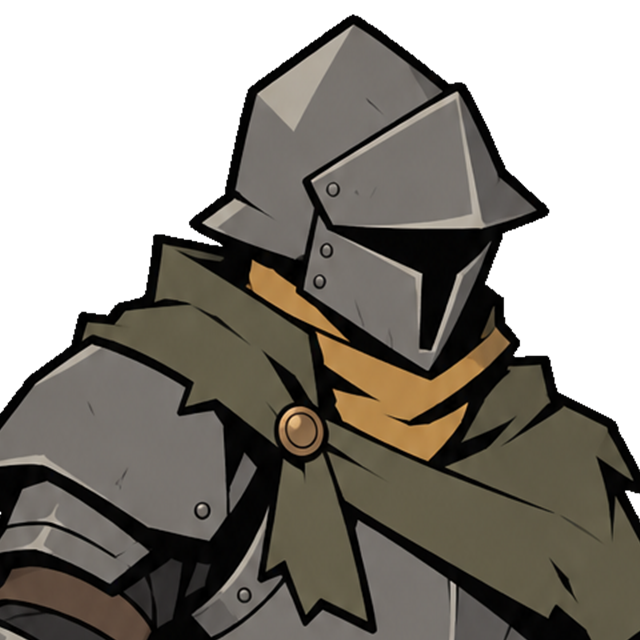
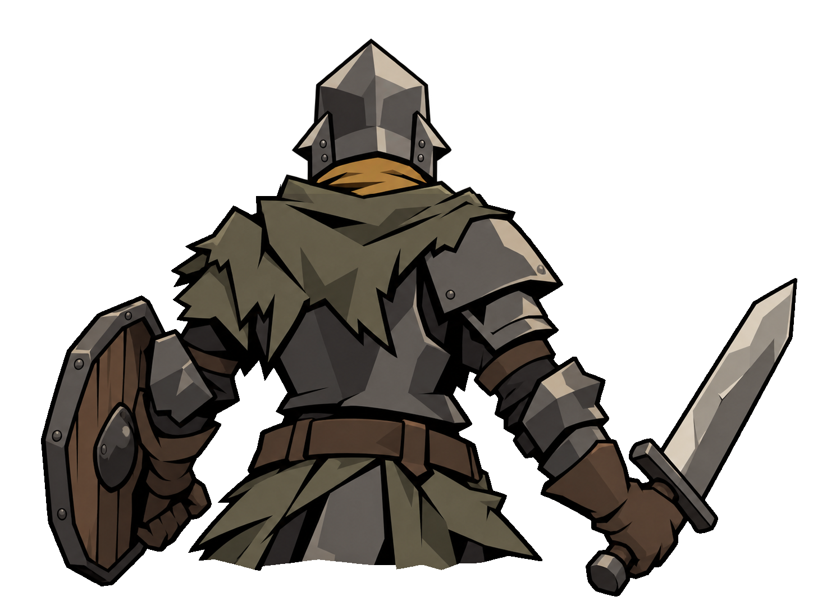
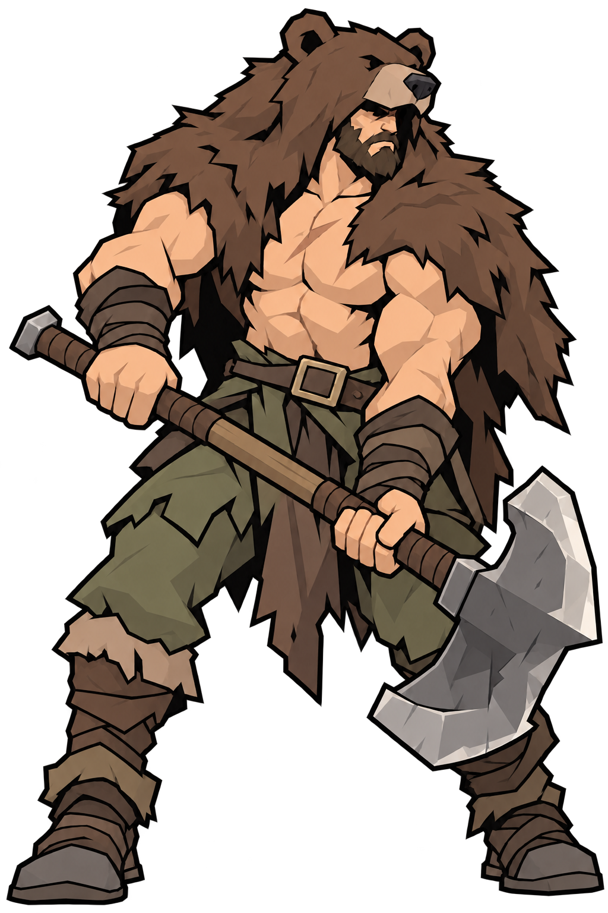
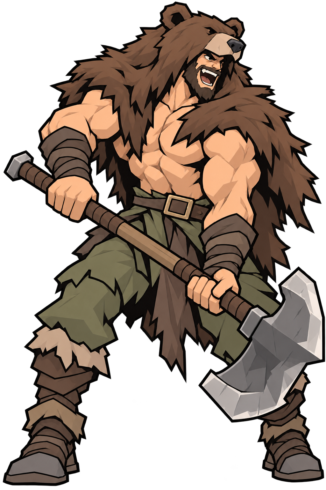
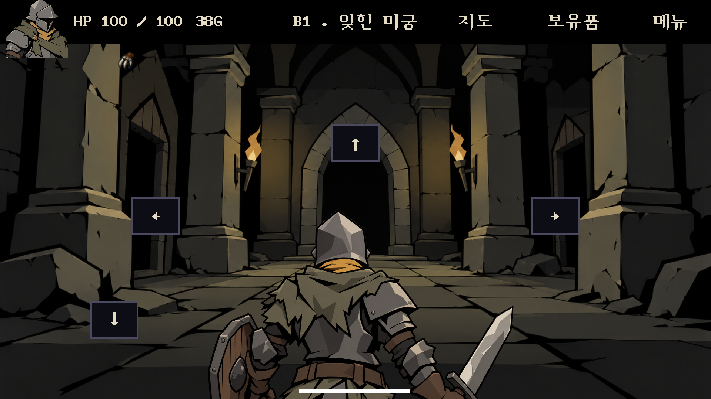

최신 수정: 투구 윤곽·방패 손잡이·부족식 하의 보기 →
워리어 투구 구조 · 바바리안 격노 수정 (이전 기록)
워리어는 정면 포트레이트와 연결되는 후두부로, 곰가죽 바바리안은 호탕하게 포효하며 싸움에 뛰어드는 성격으로 조정했습니다.
워리어 · 포트레이트와 뒷면

기준 · 비스듬한 정수리 능선과 꺾이는 테두리
수정 전 · 뒷면에 앞판 같은 리벳 판 수정 후 · 감싸는 후두부, 목을 따라 꺾이는 하단
수정 후 · 감싸는 후두부, 목을 따라 꺾이는 하단곰가죽 바바리안 · 차분함에서 호탕한 격노로

이전 · 차분하고 엄숙한 인상
수정 · 이빨을 드러낸 웃는 포효, 낮춘 눈썹, 비튼 상체와 힘을 준 팔현재 캐릭터들과 비교

곰가죽과 양손 도끼를 유지한 별도 시안입니다. 게임의 리자드 원본과 다른 캐릭터의 얼굴은 그대로 보존했습니다.
Unity 적용 화면

수정·검증 기록 · 내장 image_gen 편집 프롬프트 · 배경 복원 비교